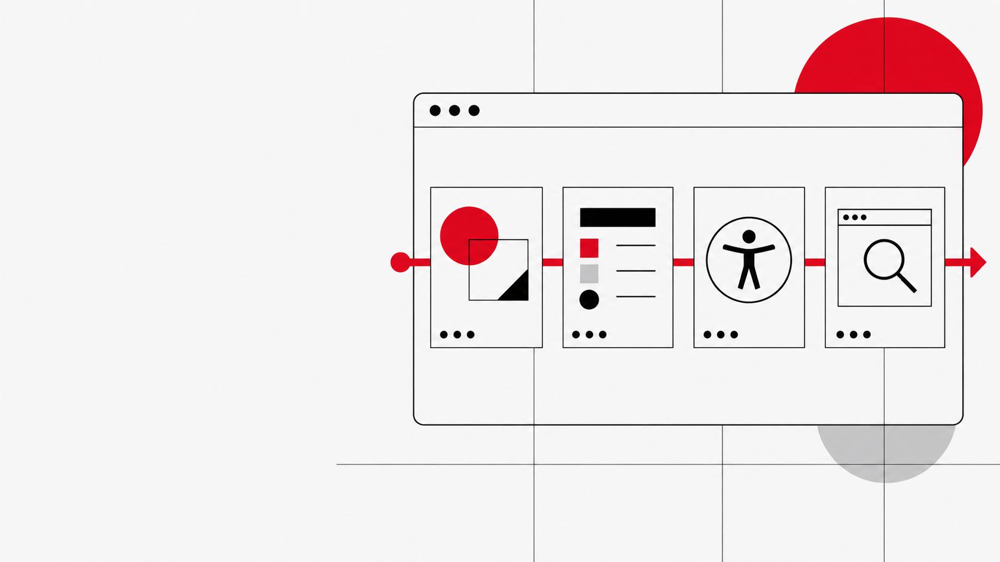

01
디자인 방향을 먼저 고정
대상과 문제를 정의한 뒤, 한 가지 시각적 앵커와 차별점을 정합니다. 화면이 기본값으로 흘러가지 않도록 시작점을 기록합니다.
Web UI creation / workflow guide
디자인 방향을 정하고, 재사용 가능한 UI 기준을 세우고, 접근성과 실제 브라우저 동작까지 확인합니다. `web-design-ui-workflow`는 그 순서를 Codex 안에서 다시 쓸 수 있게 묶은 스킬입니다.
현재 저장소에는 글로벌 설치 번들과 별도 스킬 ZIP이 함께 보존되어 있습니다.

01 / WHY THIS WORKFLOW
01
대상과 문제를 정의한 뒤, 한 가지 시각적 앵커와 차별점을 정합니다. 화면이 기본값으로 흘러가지 않도록 시작점을 기록합니다.
02
색·타이포그래피·간격은 토큰으로, 반복되는 화면 요소는 컴포넌트와 변형으로 묶습니다. 픽셀을 임시로 밀어 맞추는 일을 줄입니다.
03
데스크톱·태블릿·모바일에서 주요 흐름을 실행하고, 키보드 포커스·오버플로우·콘솔과 리소스 실패까지 확인합니다.
02 / THE SEQUENCE
오케스트레이터는 하위 스킬의 역할을 섞지 않습니다. 각 단계의 책임을 보존하고, 마지막에 실제 브라우저 QA로 연결합니다.
ART DIRECTION
문제·대상·앵커·차별점을 정하고 화면의 시각적 방향과 콘텐츠 규칙을 만듭니다.
SYSTEM & METRICS
토큰, 컴포넌트, 반응형 관계, 로딩·오류·포커스 상태를 구현 계약으로 바꿉니다.
ACCESSIBLE BY DEFAULT
시맨틱 구조, 키보드 사용, 명확한 이름, 명암, reflow, reduced motion을 처음부터 설계합니다.
REAL BROWSER QA
1440×900, 768×1024, 390×844에서 주요 흐름과 브라우저 증거를 확인합니다.
03 / INSTALL
글로벌 설치 번들을 내려받아 실행하면 네 가지 Codex 구성요소와 Playwright MCP 설정이 함께 준비됩니다.
설치 번들의 README 열기frontend-designfrontend-ui-standardsaccessibilityweb-design-ui-workflow@playwright/mcp@0.0.81 서버 설정chmod +x install.sh
./install.sh
설치 스크립트는 기존 Playwright 설정이 다른 경우 중단하고, 관련 파일을 백업하도록 설계되어 있습니다.
새로 설치된 스킬과 MCP 서버 구성을 다시 읽을 수 있도록 앱을 재시작합니다.
${CODEX_HOME:-$HOME/.codex}/skills/web-design-ui-workflow/scripts/doctor.sh
복사 버튼을 누르면 현재 단계의 명령을 클립보드에 넣습니다.